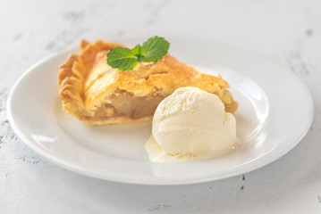

Ice Cream Pie

Description
Ice cream pie is a frozen dessert made by spreading softened ice cream into a pie crust - usually a cookie or graham cracker crust — and freezing it until firm. It’s often topped with whipped cream, chocolate sauce, or other sweet toppings before serving.
Ingredients
- 2 cups crushed chocolate cookies
- 5 tbsp melted butter
- 1.5 quarts (6 cups) of your favorite ice cream, softened slightly
- Optional: chocolate chips, nuts, cookie chunks, or caramel swirls
- Whipped cream (optional)
- Chocolate syrup or ganache (optional)
- Crushed nuts or sprinkles (optional)
- Cherries (optional)
Steps
- Mix cookie crumbs and melted butter in a bowl until it resembles wet sand.
- Press firmly into a 9-inch pie dish (bottom and sides).
- Freeze for 10–15 minutes while you prep the filling.
- Let the ice cream sit out for 10–15 minutes until soft but not melted.
- Scoop and spread the ice cream into the chilled crust, pressing it in evenly.
- Add mix-ins (if using) as you layer the ice cream.
- Cover with foil or plastic wrap.
- Freeze for at least 4 hours or overnight until solid.
- Just before serving, top with whipped cream, drizzle with chocolate syrup, and add sprinkles or nuts.
- Let sit for a few minutes at room temp for easier slicing.
- Cut into wedges and serve cold.